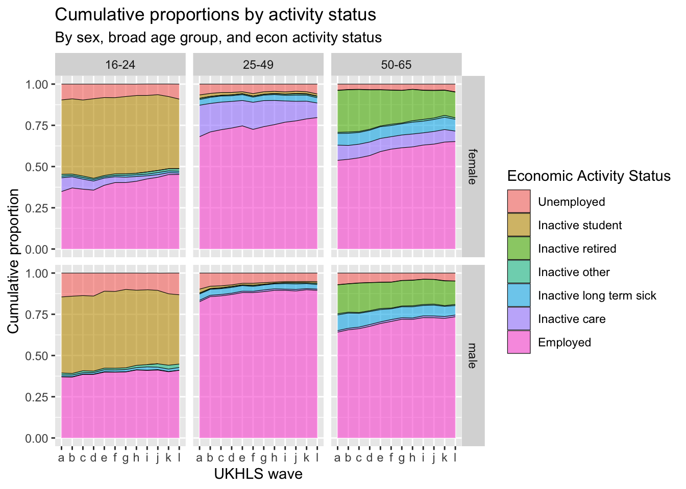
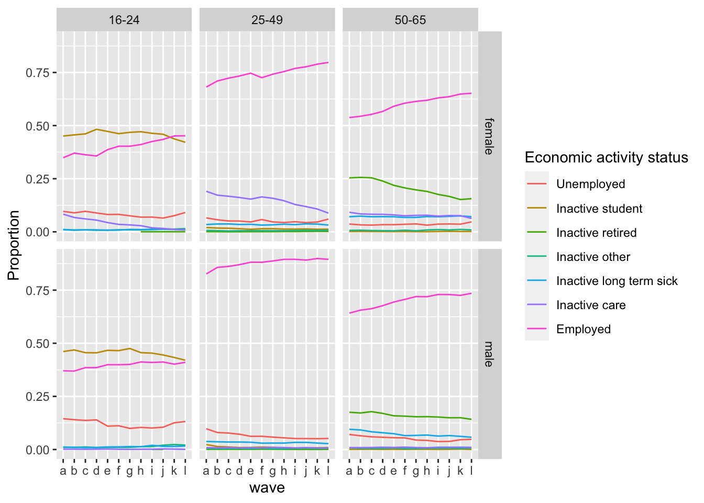

<!DOCTYPE html>
<html xmlns="http://www.w3.org/1999/xhtml" lang="en" xml:lang="en"><head>

<meta charset="utf-8">
<meta name="generator" content="quarto-1.3.353">

<meta name="viewport" content="width=device-width, initial-scale=1.0, user-scalable=yes">

<meta name="author" content="Jon Minton; Martin Taulbut">

<title>04_visualise_sf12_relationships</title>
<style>
code{white-space: pre-wrap;}
span.smallcaps{font-variant: small-caps;}
div.columns{display: flex; gap: min(4vw, 1.5em);}
div.column{flex: auto; overflow-x: auto;}
div.hanging-indent{margin-left: 1.5em; text-indent: -1.5em;}
ul.task-list{list-style: none;}
ul.task-list li input[type="checkbox"] {
  width: 0.8em;
  margin: 0 0.8em 0.2em -1em; /* quarto-specific, see https://github.com/quarto-dev/quarto-cli/issues/4556 */ 
  vertical-align: middle;
}
/* CSS for syntax highlighting */
pre > code.sourceCode { white-space: pre; position: relative; }
pre > code.sourceCode > span { display: inline-block; line-height: 1.25; }
pre > code.sourceCode > span:empty { height: 1.2em; }
.sourceCode { overflow: visible; }
code.sourceCode > span { color: inherit; text-decoration: inherit; }
div.sourceCode { margin: 1em 0; }
pre.sourceCode { margin: 0; }
@media screen {
div.sourceCode { overflow: auto; }
}
@media print {
pre > code.sourceCode { white-space: pre-wrap; }
pre > code.sourceCode > span { text-indent: -5em; padding-left: 5em; }
}
pre.numberSource code
  { counter-reset: source-line 0; }
pre.numberSource code > span
  { position: relative; left: -4em; counter-increment: source-line; }
pre.numberSource code > span > a:first-child::before
  { content: counter(source-line);
    position: relative; left: -1em; text-align: right; vertical-align: baseline;
    border: none; display: inline-block;
    -webkit-touch-callout: none; -webkit-user-select: none;
    -khtml-user-select: none; -moz-user-select: none;
    -ms-user-select: none; user-select: none;
    padding: 0 4px; width: 4em;
  }
pre.numberSource { margin-left: 3em;  padding-left: 4px; }
div.sourceCode
  {   }
@media screen {
pre > code.sourceCode > span > a:first-child::before { text-decoration: underline; }
}
</style>


<script src="05_show_prop_act_status_by_age_and_wave_files/libs/clipboard/clipboard.min.js"></script>
<script src="05_show_prop_act_status_by_age_and_wave_files/libs/quarto-html/quarto.js"></script>
<script src="05_show_prop_act_status_by_age_and_wave_files/libs/quarto-html/popper.min.js"></script>
<script src="05_show_prop_act_status_by_age_and_wave_files/libs/quarto-html/tippy.umd.min.js"></script>
<script src="05_show_prop_act_status_by_age_and_wave_files/libs/quarto-html/anchor.min.js"></script>
<link href="05_show_prop_act_status_by_age_and_wave_files/libs/quarto-html/tippy.css" rel="stylesheet">
<link href="05_show_prop_act_status_by_age_and_wave_files/libs/quarto-html/quarto-syntax-highlighting.css" rel="stylesheet" id="quarto-text-highlighting-styles">
<script src="05_show_prop_act_status_by_age_and_wave_files/libs/bootstrap/bootstrap.min.js"></script>
<link href="05_show_prop_act_status_by_age_and_wave_files/libs/bootstrap/bootstrap-icons.css" rel="stylesheet">
<link href="05_show_prop_act_status_by_age_and_wave_files/libs/bootstrap/bootstrap.min.css" rel="stylesheet" id="quarto-bootstrap" data-mode="light">


</head>

<body class="fullcontent">

<div id="quarto-content" class="page-columns page-rows-contents page-layout-article">

<main class="content" id="quarto-document-content">

<header id="title-block-header" class="quarto-title-block default">
<div class="quarto-title">
<h1 class="title">04_visualise_sf12_relationships</h1>
</div>


<div class="quarto-title-meta">

    <div>
    <div class="quarto-title-meta-heading">Author</div>
    <div class="quarto-title-meta-contents">
             <p>Jon Minton; Martin Taulbut </p>
          </div>
  </div>
    
  
    
  </div>
  

</header>

<section id="introduction" class="level1">
<h1>Introduction</h1>
<p>The aim of this notebook is to better understand how the categories of economic activity and inactivity change by age, sex and wave in the UKHLS sample.</p>
<p>This will help us with the following:</p>
<ul>
<li><p>Think about the right level of disaggregation of economic (in)activity status</p></li>
<li><p>Think about the right age cutoffs</p></li>
<li><p>Better understand differences by sex in the above</p></li>
</ul>
<section id="load-prerequisites" class="level2">
<h2 class="anchored" data-anchor-id="load-prerequisites">Load prerequisites</h2>
<div class="cell">
<div class="sourceCode cell-code" id="cb1"><pre class="sourceCode r code-with-copy"><code class="sourceCode r"><span id="cb1-1"><a href="#cb1-1" aria-hidden="true" tabindex="-1"></a><span class="fu">library</span>(tidyverse)</span></code><button title="Copy to Clipboard" class="code-copy-button"><i class="bi"></i></button></pre></div>
<div class="cell-output cell-output-stderr">
<pre><code>── Attaching core tidyverse packages ──────────────────────── tidyverse 2.0.0 ──
✔ dplyr     1.1.2     ✔ readr     2.1.4
✔ forcats   1.0.0     ✔ stringr   1.5.0
✔ ggplot2   3.4.2     ✔ tibble    3.2.1
✔ lubridate 1.9.2     ✔ tidyr     1.3.0
✔ purrr     1.0.1     
── Conflicts ────────────────────────────────────────── tidyverse_conflicts() ──
✖ dplyr::filter() masks stats::filter()
✖ dplyr::lag()    masks stats::lag()
ℹ Use the ]8;;http://conflicted.r-lib.org/conflicted package]8;; to force all conflicts to become errors</code></pre>
</div>
<div class="sourceCode cell-code" id="cb3"><pre class="sourceCode r code-with-copy"><code class="sourceCode r"><span id="cb3-1"><a href="#cb3-1" aria-hidden="true" tabindex="-1"></a><span class="fu">library</span>(haven)</span>
<span id="cb3-2"><a href="#cb3-2" aria-hidden="true" tabindex="-1"></a><span class="fu">library</span>(here)</span></code><button title="Copy to Clipboard" class="code-copy-button"><i class="bi"></i></button></pre></div>
<div class="cell-output cell-output-stderr">
<pre><code>here() starts at /Users/JonMinton/repos/economic_inactivity</code></pre>
</div>
<div class="sourceCode cell-code" id="cb5"><pre class="sourceCode r code-with-copy"><code class="sourceCode r"><span id="cb5-1"><a href="#cb5-1" aria-hidden="true" tabindex="-1"></a>devtools<span class="sc">::</span><span class="fu">load_all</span>(<span class="fu">here</span>(<span class="st">'R'</span>))</span></code><button title="Copy to Clipboard" class="code-copy-button"><i class="bi"></i></button></pre></div>
<div class="cell-output cell-output-stderr">
<pre><code>ℹ Loading economic_inactivity</code></pre>
</div>
<div class="sourceCode cell-code" id="cb7"><pre class="sourceCode r code-with-copy"><code class="sourceCode r"><span id="cb7-1"><a href="#cb7-1" aria-hidden="true" tabindex="-1"></a>base_dir_location <span class="ot">&lt;-</span> <span class="st">"big_data/UKDA-6614-stata/stata/stata13_se/ukhls"</span></span>
<span id="cb7-2"><a href="#cb7-2" aria-hidden="true" tabindex="-1"></a>indresp_files <span class="ot">&lt;-</span> <span class="fu">dir</span>(<span class="fu">here</span>(base_dir_location), <span class="at">pattern =</span> <span class="st">"[a-z]_indresp.dta"</span>, <span class="at">full.names =</span> <span class="cn">TRUE</span>)</span>
<span id="cb7-3"><a href="#cb7-3" aria-hidden="true" tabindex="-1"></a></span>
<span id="cb7-4"><a href="#cb7-4" aria-hidden="true" tabindex="-1"></a>varnames <span class="ot">&lt;-</span>  <span class="fu">c</span>(</span>
<span id="cb7-5"><a href="#cb7-5" aria-hidden="true" tabindex="-1"></a>  <span class="st">"jbstat"</span>, <span class="st">"dvage"</span>, <span class="st">"sex"</span></span>
<span id="cb7-6"><a href="#cb7-6" aria-hidden="true" tabindex="-1"></a>  )</span>
<span id="cb7-7"><a href="#cb7-7" aria-hidden="true" tabindex="-1"></a></span>
<span id="cb7-8"><a href="#cb7-8" aria-hidden="true" tabindex="-1"></a>extract_what <span class="ot">&lt;-</span> <span class="fu">c</span>(</span>
<span id="cb7-9"><a href="#cb7-9" aria-hidden="true" tabindex="-1"></a>  <span class="st">"labels"</span>, <span class="st">"values"</span>, <span class="st">"labels"</span></span>
<span id="cb7-10"><a href="#cb7-10" aria-hidden="true" tabindex="-1"></a>  )</span>
<span id="cb7-11"><a href="#cb7-11" aria-hidden="true" tabindex="-1"></a></span>
<span id="cb7-12"><a href="#cb7-12" aria-hidden="true" tabindex="-1"></a>overall_start_time <span class="ot">=</span> <span class="fu">Sys.time</span>()</span>
<span id="cb7-13"><a href="#cb7-13" aria-hidden="true" tabindex="-1"></a></span>
<span id="cb7-14"><a href="#cb7-14" aria-hidden="true" tabindex="-1"></a>long_slimmed_datalist <span class="ot">&lt;-</span> <span class="fu">lapply</span>(indresp_files, </span>
<span id="cb7-15"><a href="#cb7-15" aria-hidden="true" tabindex="-1"></a>       read_and_slim_data, </span>
<span id="cb7-16"><a href="#cb7-16" aria-hidden="true" tabindex="-1"></a>       <span class="at">varnames =</span> varnames, </span>
<span id="cb7-17"><a href="#cb7-17" aria-hidden="true" tabindex="-1"></a>       <span class="at">extract_what =</span> extract_what, </span>
<span id="cb7-18"><a href="#cb7-18" aria-hidden="true" tabindex="-1"></a>       <span class="at">verbose =</span> <span class="cn">TRUE</span></span>
<span id="cb7-19"><a href="#cb7-19" aria-hidden="true" tabindex="-1"></a>)</span></code><button title="Copy to Clipboard" class="code-copy-button"><i class="bi"></i></button></pre></div>
<div class="cell-output cell-output-stdout">
<pre><code>[1] "extracting file: /Users/JonMinton/repos/economic_inactivity/big_data/UKDA-6614-stata/stata/stata13_se/ukhls/a_indresp.dta"
[1] "Attempting to find 3 variables"
[1] "All variables requested found"
[1] "read file in 0.296215057373047 seconds"
[1] "slimming file..."
[1] "extracted 3 variables in 0.109538078308105 seconds"
[1] "extracting file: /Users/JonMinton/repos/economic_inactivity/big_data/UKDA-6614-stata/stata/stata13_se/ukhls/b_indresp.dta"
[1] "Attempting to find 3 variables"
[1] "All variables requested found"
[1] "read file in 0.368309020996094 seconds"
[1] "slimming file..."
[1] "extracted 3 variables in 0.107240915298462 seconds"
[1] "extracting file: /Users/JonMinton/repos/economic_inactivity/big_data/UKDA-6614-stata/stata/stata13_se/ukhls/c_indresp.dta"
[1] "Attempting to find 3 variables"
[1] "All variables requested found"
[1] "read file in 0.591771125793457 seconds"
[1] "slimming file..."
[1] "extracted 3 variables in 0.0962088108062744 seconds"
[1] "extracting file: /Users/JonMinton/repos/economic_inactivity/big_data/UKDA-6614-stata/stata/stata13_se/ukhls/d_indresp.dta"
[1] "Attempting to find 3 variables"
[1] "All variables requested found"
[1] "read file in 0.42807412147522 seconds"
[1] "slimming file..."
[1] "extracted 3 variables in 0.0896389484405518 seconds"
[1] "extracting file: /Users/JonMinton/repos/economic_inactivity/big_data/UKDA-6614-stata/stata/stata13_se/ukhls/e_indresp.dta"
[1] "Attempting to find 3 variables"
[1] "All variables requested found"
[1] "read file in 0.466773986816406 seconds"
[1] "slimming file..."
[1] "extracted 3 variables in 0.0870640277862549 seconds"
[1] "extracting file: /Users/JonMinton/repos/economic_inactivity/big_data/UKDA-6614-stata/stata/stata13_se/ukhls/f_indresp.dta"
[1] "Attempting to find 3 variables"
[1] "All variables requested found"
[1] "read file in 0.39802098274231 seconds"
[1] "slimming file..."
[1] "extracted 3 variables in 0.0974540710449219 seconds"
[1] "extracting file: /Users/JonMinton/repos/economic_inactivity/big_data/UKDA-6614-stata/stata/stata13_se/ukhls/g_indresp.dta"
[1] "Attempting to find 3 variables"
[1] "All variables requested found"
[1] "read file in 0.550014019012451 seconds"
[1] "slimming file..."
[1] "extracted 3 variables in 0.0822319984436035 seconds"
[1] "extracting file: /Users/JonMinton/repos/economic_inactivity/big_data/UKDA-6614-stata/stata/stata13_se/ukhls/h_indresp.dta"
[1] "Attempting to find 3 variables"
[1] "All variables requested found"
[1] "read file in 0.380127906799316 seconds"
[1] "slimming file..."
[1] "extracted 3 variables in 0.0902731418609619 seconds"
[1] "extracting file: /Users/JonMinton/repos/economic_inactivity/big_data/UKDA-6614-stata/stata/stata13_se/ukhls/i_indresp.dta"
[1] "Attempting to find 3 variables"
[1] "All variables requested found"
[1] "read file in 0.479725122451782 seconds"
[1] "slimming file..."
[1] "extracted 3 variables in 0.0825140476226807 seconds"
[1] "extracting file: /Users/JonMinton/repos/economic_inactivity/big_data/UKDA-6614-stata/stata/stata13_se/ukhls/j_indresp.dta"
[1] "Attempting to find 3 variables"
[1] "All variables requested found"
[1] "read file in 0.365425109863281 seconds"
[1] "slimming file..."
[1] "extracted 3 variables in 0.137246131896973 seconds"
[1] "extracting file: /Users/JonMinton/repos/economic_inactivity/big_data/UKDA-6614-stata/stata/stata13_se/ukhls/k_indresp.dta"
[1] "Attempting to find 3 variables"
[1] "All variables requested found"
[1] "read file in 0.451611042022705 seconds"
[1] "slimming file..."
[1] "extracted 3 variables in 0.0677719116210938 seconds"
[1] "extracting file: /Users/JonMinton/repos/economic_inactivity/big_data/UKDA-6614-stata/stata/stata13_se/ukhls/l_indresp.dta"
[1] "Attempting to find 3 variables"
[1] "All variables requested found"
[1] "read file in 0.335208892822266 seconds"
[1] "slimming file..."
[1] "extracted 3 variables in 0.13052487373352 seconds"</code></pre>
</div>
<div class="sourceCode cell-code" id="cb9"><pre class="sourceCode r code-with-copy"><code class="sourceCode r"><span id="cb9-1"><a href="#cb9-1" aria-hidden="true" tabindex="-1"></a>long_slimmed_data <span class="ot">&lt;-</span> <span class="fu">bind_rows</span>(long_slimmed_datalist)</span>
<span id="cb9-2"><a href="#cb9-2" aria-hidden="true" tabindex="-1"></a></span>
<span id="cb9-3"><a href="#cb9-3" aria-hidden="true" tabindex="-1"></a>overall_end_time <span class="ot">=</span> <span class="fu">Sys.time</span>()</span>
<span id="cb9-4"><a href="#cb9-4" aria-hidden="true" tabindex="-1"></a></span>
<span id="cb9-5"><a href="#cb9-5" aria-hidden="true" tabindex="-1"></a><span class="fu">print</span>(<span class="fu">paste</span>(</span>
<span id="cb9-6"><a href="#cb9-6" aria-hidden="true" tabindex="-1"></a>  <span class="st">"Overall process took"</span>,</span>
<span id="cb9-7"><a href="#cb9-7" aria-hidden="true" tabindex="-1"></a>  <span class="fu">difftime</span>(overall_end_time, overall_start_time, <span class="at">units =</span> <span class="st">"mins"</span>),</span>
<span id="cb9-8"><a href="#cb9-8" aria-hidden="true" tabindex="-1"></a>  <span class="st">"minutes"</span></span>
<span id="cb9-9"><a href="#cb9-9" aria-hidden="true" tabindex="-1"></a>))</span></code><button title="Copy to Clipboard" class="code-copy-button"><i class="bi"></i></button></pre></div>
<div class="cell-output cell-output-stdout">
<pre><code>[1] "Overall process took 0.10597554842631 minutes"</code></pre>
</div>
<div class="sourceCode cell-code" id="cb11"><pre class="sourceCode r code-with-copy"><code class="sourceCode r"><span id="cb11-1"><a href="#cb11-1" aria-hidden="true" tabindex="-1"></a><span class="fu">rm</span>(long_slimmed_datalist)</span>
<span id="cb11-2"><a href="#cb11-2" aria-hidden="true" tabindex="-1"></a>long_slimmed_data</span></code><button title="Copy to Clipboard" class="code-copy-button"><i class="bi"></i></button></pre></div>
<div class="cell-output cell-output-stdout">
<pre><code># A tibble: 1,516,371 × 4
       pidp wave  variable value 
      &lt;dbl&gt; &lt;chr&gt; &lt;chr&gt;    &lt;chr&gt; 
 1 68001367 a     sex      male  
 2 68004087 a     sex      male  
 3 68006127 a     sex      female
 4 68006135 a     sex      female
 5 68006807 a     sex      female
 6 68007487 a     sex      female
 7 68007491 a     sex      male  
 8 68007495 a     sex      male  
 9 68007499 a     sex      male  
10 68008167 a     sex      female
# ℹ 1,516,361 more rows</code></pre>
</div>
<div class="sourceCode cell-code" id="cb13"><pre class="sourceCode r code-with-copy"><code class="sourceCode r"><span id="cb13-1"><a href="#cb13-1" aria-hidden="true" tabindex="-1"></a>econ_act_groups <span class="ot">&lt;-</span> readxl<span class="sc">::</span><span class="fu">read_excel</span>(<span class="at">path =</span> <span class="fu">here</span>(<span class="st">"data/economic_activities_categories.xlsx"</span>), <span class="at">sheet =</span> <span class="st">'categories'</span>) <span class="sc">%&gt;%</span> </span>
<span id="cb13-2"><a href="#cb13-2" aria-hidden="true" tabindex="-1"></a>  janitor<span class="sc">::</span><span class="fu">clean_names</span>()</span></code><button title="Copy to Clipboard" class="code-copy-button"><i class="bi"></i></button></pre></div>
</div>
<p>Now to pivot this</p>
<div class="cell">
<div class="sourceCode cell-code" id="cb14"><pre class="sourceCode r code-with-copy"><code class="sourceCode r"><span id="cb14-1"><a href="#cb14-1" aria-hidden="true" tabindex="-1"></a>long_slimmed_data <span class="sc">%&gt;%</span> </span>
<span id="cb14-2"><a href="#cb14-2" aria-hidden="true" tabindex="-1"></a>  <span class="fu">pivot_wider</span>(<span class="at">names_from =</span> <span class="st">"variable"</span>, <span class="at">values_from =</span> <span class="st">"value"</span>) <span class="sc">%&gt;%</span> </span>
<span id="cb14-3"><a href="#cb14-3" aria-hidden="true" tabindex="-1"></a>  <span class="fu">mutate</span>(<span class="at">age =</span> <span class="fu">as.numeric</span>(dvage)) <span class="sc">%&gt;%</span> </span>
<span id="cb14-4"><a href="#cb14-4" aria-hidden="true" tabindex="-1"></a>  <span class="fu">mutate</span>(<span class="at">age =</span> <span class="fu">ifelse</span>(age <span class="sc">&lt;</span> <span class="dv">0</span> , <span class="cn">NA</span>, age)) <span class="sc">%&gt;%</span> </span>
<span id="cb14-5"><a href="#cb14-5" aria-hidden="true" tabindex="-1"></a>  <span class="fu">mutate</span>(<span class="at">age_group =</span> <span class="fu">case_when</span>(</span>
<span id="cb14-6"><a href="#cb14-6" aria-hidden="true" tabindex="-1"></a>    <span class="fu">between</span>(age, <span class="dv">16</span>, <span class="dv">24</span>) <span class="sc">~</span> <span class="st">"16-24"</span>,</span>
<span id="cb14-7"><a href="#cb14-7" aria-hidden="true" tabindex="-1"></a>    <span class="fu">between</span>(age, <span class="dv">25</span>, <span class="dv">49</span>) <span class="sc">~</span> <span class="st">"25-49"</span>,</span>
<span id="cb14-8"><a href="#cb14-8" aria-hidden="true" tabindex="-1"></a>    <span class="fu">between</span>(age, <span class="dv">50</span>, <span class="dv">65</span>) <span class="sc">~</span> <span class="st">"50-65"</span></span>
<span id="cb14-9"><a href="#cb14-9" aria-hidden="true" tabindex="-1"></a>  )) <span class="sc">%&gt;%</span> </span>
<span id="cb14-10"><a href="#cb14-10" aria-hidden="true" tabindex="-1"></a>  <span class="fu">filter</span>(<span class="sc">!</span><span class="fu">is.na</span>(age_group)) <span class="sc">%&gt;%</span> </span>
<span id="cb14-11"><a href="#cb14-11" aria-hidden="true" tabindex="-1"></a>  <span class="fu">filter</span>(sex <span class="sc">%in%</span> <span class="fu">c</span>(<span class="st">"male"</span>, <span class="st">"female"</span>)) <span class="sc">%&gt;%</span> </span>
<span id="cb14-12"><a href="#cb14-12" aria-hidden="true" tabindex="-1"></a>  <span class="fu">left_join</span>(</span>
<span id="cb14-13"><a href="#cb14-13" aria-hidden="true" tabindex="-1"></a>    econ_act_groups <span class="sc">%&gt;%</span> <span class="fu">mutate</span>(<span class="at">recoded =</span> level_2_meso), </span>
<span id="cb14-14"><a href="#cb14-14" aria-hidden="true" tabindex="-1"></a>    <span class="at">by =</span> <span class="fu">c</span>(<span class="st">"jbstat"</span> <span class="ot">=</span> <span class="st">"original"</span>)</span>
<span id="cb14-15"><a href="#cb14-15" aria-hidden="true" tabindex="-1"></a>  ) <span class="sc">%&gt;%</span> </span>
<span id="cb14-16"><a href="#cb14-16" aria-hidden="true" tabindex="-1"></a>  <span class="fu">select</span>(pidp, wave, sex, age, age_group, <span class="at">econ_act_status =</span> recoded) <span class="sc">%&gt;%</span> </span>
<span id="cb14-17"><a href="#cb14-17" aria-hidden="true" tabindex="-1"></a>  <span class="fu">filter</span>(econ_act_status <span class="sc">!=</span> <span class="st">"Missing"</span>) <span class="sc">%&gt;%</span> </span>
<span id="cb14-18"><a href="#cb14-18" aria-hidden="true" tabindex="-1"></a>  <span class="fu">group_by</span>(age_group, sex, wave, econ_act_status) <span class="sc">%&gt;%</span> </span>
<span id="cb14-19"><a href="#cb14-19" aria-hidden="true" tabindex="-1"></a>  <span class="fu">count</span>() <span class="sc">%&gt;%</span> </span>
<span id="cb14-20"><a href="#cb14-20" aria-hidden="true" tabindex="-1"></a>  <span class="fu">group_by</span>(age_group, sex, wave) <span class="sc">%&gt;%</span> </span>
<span id="cb14-21"><a href="#cb14-21" aria-hidden="true" tabindex="-1"></a>  <span class="fu">mutate</span>(<span class="at">N =</span> <span class="fu">sum</span>(n)) <span class="sc">%&gt;%</span> </span>
<span id="cb14-22"><a href="#cb14-22" aria-hidden="true" tabindex="-1"></a>  <span class="fu">mutate</span>(<span class="at">proportion =</span> n <span class="sc">/</span> N) <span class="sc">%&gt;%</span> </span>
<span id="cb14-23"><a href="#cb14-23" aria-hidden="true" tabindex="-1"></a>  <span class="fu">ggplot</span>(<span class="fu">aes</span>(<span class="at">x=</span>wave, <span class="at">y=</span>proportion, </span>
<span id="cb14-24"><a href="#cb14-24" aria-hidden="true" tabindex="-1"></a>             <span class="at">group =</span> forcats<span class="sc">::</span><span class="fu">fct_rev</span>(econ_act_status), </span>
<span id="cb14-25"><a href="#cb14-25" aria-hidden="true" tabindex="-1"></a>             <span class="at">fill =</span> forcats<span class="sc">::</span><span class="fu">fct_rev</span>(econ_act_status)</span>
<span id="cb14-26"><a href="#cb14-26" aria-hidden="true" tabindex="-1"></a>      )</span>
<span id="cb14-27"><a href="#cb14-27" aria-hidden="true" tabindex="-1"></a>    ) <span class="sc">+</span> </span>
<span id="cb14-28"><a href="#cb14-28" aria-hidden="true" tabindex="-1"></a>    <span class="fu">geom_area</span>(<span class="at">alpha=</span><span class="fl">0.6</span> , <span class="at">linewidth =</span> <span class="dv">1</span>, <span class="at">colour=</span><span class="st">"black"</span>) <span class="sc">+</span></span>
<span id="cb14-29"><a href="#cb14-29" aria-hidden="true" tabindex="-1"></a>    <span class="fu">facet_grid</span>(sex<span class="sc">~</span>age_group) <span class="sc">+</span></span>
<span id="cb14-30"><a href="#cb14-30" aria-hidden="true" tabindex="-1"></a>  <span class="fu">labs</span>(</span>
<span id="cb14-31"><a href="#cb14-31" aria-hidden="true" tabindex="-1"></a>    <span class="at">x =</span> <span class="st">"UKHLS wave"</span>, <span class="at">y =</span> <span class="st">"Cumulative proportion"</span>,</span>
<span id="cb14-32"><a href="#cb14-32" aria-hidden="true" tabindex="-1"></a>    <span class="at">title =</span> <span class="st">"Cumulative proportions by activity status"</span>,</span>
<span id="cb14-33"><a href="#cb14-33" aria-hidden="true" tabindex="-1"></a>    <span class="at">subtitle =</span> <span class="st">"By sex, broad age group, and three-group activity status"</span>,</span>
<span id="cb14-34"><a href="#cb14-34" aria-hidden="true" tabindex="-1"></a>    <span class="at">fill =</span> <span class="st">"Economic Activity Status"</span></span>
<span id="cb14-35"><a href="#cb14-35" aria-hidden="true" tabindex="-1"></a>  )</span></code><button title="Copy to Clipboard" class="code-copy-button"><i class="bi"></i></button></pre></div>
<div class="cell-output-display">
<p></p>
</div>
</div>
<p>Some observations:</p>
<ul>
<li>Rising employment rates for women</li>
<li>Rising employment rates for prime age men (but from high baseline)</li>
<li>Inactivity greatest in young adult groups (Students?)</li>
<li>Rates of decrease in inactivity appear to have slowed down in older working age men</li>
<li>Not much increase in employment rates in young adult men, compared with steady falls over time for young adult women</li>
</ul>
<p>We’ll now do the same but disaggregating the economic inactivity categories a bit more…</p>
<div class="cell">
<div class="sourceCode cell-code" id="cb15"><pre class="sourceCode r code-with-copy"><code class="sourceCode r"><span id="cb15-1"><a href="#cb15-1" aria-hidden="true" tabindex="-1"></a>long_slimmed_data <span class="sc">%&gt;%</span> </span>
<span id="cb15-2"><a href="#cb15-2" aria-hidden="true" tabindex="-1"></a>  <span class="fu">pivot_wider</span>(<span class="at">names_from =</span> <span class="st">"variable"</span>, <span class="at">values_from =</span> <span class="st">"value"</span>) <span class="sc">%&gt;%</span> </span>
<span id="cb15-3"><a href="#cb15-3" aria-hidden="true" tabindex="-1"></a>  <span class="fu">mutate</span>(<span class="at">age =</span> <span class="fu">as.numeric</span>(dvage)) <span class="sc">%&gt;%</span> </span>
<span id="cb15-4"><a href="#cb15-4" aria-hidden="true" tabindex="-1"></a>  <span class="fu">mutate</span>(<span class="at">age =</span> <span class="fu">ifelse</span>(age <span class="sc">&lt;</span> <span class="dv">0</span> , <span class="cn">NA</span>, age)) <span class="sc">%&gt;%</span> </span>
<span id="cb15-5"><a href="#cb15-5" aria-hidden="true" tabindex="-1"></a>  <span class="fu">mutate</span>(<span class="at">age_group =</span> <span class="fu">case_when</span>(</span>
<span id="cb15-6"><a href="#cb15-6" aria-hidden="true" tabindex="-1"></a>    <span class="fu">between</span>(age, <span class="dv">16</span>, <span class="dv">24</span>) <span class="sc">~</span> <span class="st">"16-24"</span>,</span>
<span id="cb15-7"><a href="#cb15-7" aria-hidden="true" tabindex="-1"></a>    <span class="fu">between</span>(age, <span class="dv">25</span>, <span class="dv">49</span>) <span class="sc">~</span> <span class="st">"25-49"</span>,</span>
<span id="cb15-8"><a href="#cb15-8" aria-hidden="true" tabindex="-1"></a>    <span class="fu">between</span>(age, <span class="dv">50</span>, <span class="dv">65</span>) <span class="sc">~</span> <span class="st">"50-65"</span></span>
<span id="cb15-9"><a href="#cb15-9" aria-hidden="true" tabindex="-1"></a>  )) <span class="sc">%&gt;%</span> </span>
<span id="cb15-10"><a href="#cb15-10" aria-hidden="true" tabindex="-1"></a>  <span class="fu">filter</span>(<span class="sc">!</span><span class="fu">is.na</span>(age_group)) <span class="sc">%&gt;%</span> </span>
<span id="cb15-11"><a href="#cb15-11" aria-hidden="true" tabindex="-1"></a>  <span class="fu">filter</span>(sex <span class="sc">%in%</span> <span class="fu">c</span>(<span class="st">"male"</span>, <span class="st">"female"</span>)) <span class="sc">%&gt;%</span> </span>
<span id="cb15-12"><a href="#cb15-12" aria-hidden="true" tabindex="-1"></a>  <span class="fu">left_join</span>(</span>
<span id="cb15-13"><a href="#cb15-13" aria-hidden="true" tabindex="-1"></a>    econ_act_groups <span class="sc">%&gt;%</span> <span class="fu">mutate</span>(<span class="at">recoded =</span> level_3), </span>
<span id="cb15-14"><a href="#cb15-14" aria-hidden="true" tabindex="-1"></a>    <span class="at">by =</span> <span class="fu">c</span>(<span class="st">"jbstat"</span> <span class="ot">=</span> <span class="st">"original"</span>)</span>
<span id="cb15-15"><a href="#cb15-15" aria-hidden="true" tabindex="-1"></a>  ) <span class="sc">%&gt;%</span> </span>
<span id="cb15-16"><a href="#cb15-16" aria-hidden="true" tabindex="-1"></a>  <span class="fu">select</span>(pidp, wave, sex, age, age_group, <span class="at">econ_act_status =</span> recoded) <span class="sc">%&gt;%</span> </span>
<span id="cb15-17"><a href="#cb15-17" aria-hidden="true" tabindex="-1"></a>  <span class="fu">filter</span>(econ_act_status <span class="sc">!=</span> <span class="st">"Missing"</span>) <span class="sc">%&gt;%</span> </span>
<span id="cb15-18"><a href="#cb15-18" aria-hidden="true" tabindex="-1"></a>  <span class="fu">group_by</span>(age_group, sex, wave, econ_act_status) <span class="sc">%&gt;%</span> </span>
<span id="cb15-19"><a href="#cb15-19" aria-hidden="true" tabindex="-1"></a>  <span class="fu">count</span>() <span class="sc">%&gt;%</span> </span>
<span id="cb15-20"><a href="#cb15-20" aria-hidden="true" tabindex="-1"></a>  <span class="fu">group_by</span>(age_group, sex, wave) <span class="sc">%&gt;%</span> </span>
<span id="cb15-21"><a href="#cb15-21" aria-hidden="true" tabindex="-1"></a>  <span class="fu">mutate</span>(<span class="at">N =</span> <span class="fu">sum</span>(n)) <span class="sc">%&gt;%</span> </span>
<span id="cb15-22"><a href="#cb15-22" aria-hidden="true" tabindex="-1"></a>  <span class="fu">mutate</span>(<span class="at">proportion =</span> n <span class="sc">/</span> N) <span class="sc">%&gt;%</span> </span>
<span id="cb15-23"><a href="#cb15-23" aria-hidden="true" tabindex="-1"></a>  <span class="fu">ggplot</span>(<span class="fu">aes</span>(<span class="at">x=</span>wave, <span class="at">y=</span>proportion, </span>
<span id="cb15-24"><a href="#cb15-24" aria-hidden="true" tabindex="-1"></a>             <span class="at">group =</span> forcats<span class="sc">::</span><span class="fu">fct_rev</span>(econ_act_status), </span>
<span id="cb15-25"><a href="#cb15-25" aria-hidden="true" tabindex="-1"></a>             <span class="at">fill =</span> forcats<span class="sc">::</span><span class="fu">fct_rev</span>(econ_act_status)</span>
<span id="cb15-26"><a href="#cb15-26" aria-hidden="true" tabindex="-1"></a>      )</span>
<span id="cb15-27"><a href="#cb15-27" aria-hidden="true" tabindex="-1"></a>    ) <span class="sc">+</span> </span>
<span id="cb15-28"><a href="#cb15-28" aria-hidden="true" tabindex="-1"></a>    <span class="fu">geom_area</span>(<span class="at">alpha=</span><span class="fl">0.6</span> , <span class="at">linewidth =</span> <span class="fl">0.2</span>, <span class="at">colour=</span><span class="st">"black"</span>) <span class="sc">+</span></span>
<span id="cb15-29"><a href="#cb15-29" aria-hidden="true" tabindex="-1"></a>    <span class="fu">facet_grid</span>(sex<span class="sc">~</span>age_group) <span class="sc">+</span></span>
<span id="cb15-30"><a href="#cb15-30" aria-hidden="true" tabindex="-1"></a>  <span class="fu">labs</span>(</span>
<span id="cb15-31"><a href="#cb15-31" aria-hidden="true" tabindex="-1"></a>    <span class="at">x =</span> <span class="st">"UKHLS wave"</span>, <span class="at">y =</span> <span class="st">"Cumulative proportion"</span>,</span>
<span id="cb15-32"><a href="#cb15-32" aria-hidden="true" tabindex="-1"></a>    <span class="at">title =</span> <span class="st">"Cumulative proportions by activity status"</span>,</span>
<span id="cb15-33"><a href="#cb15-33" aria-hidden="true" tabindex="-1"></a>    <span class="at">subtitle =</span> <span class="st">"By sex, broad age group, and econ activity status"</span>,</span>
<span id="cb15-34"><a href="#cb15-34" aria-hidden="true" tabindex="-1"></a>    <span class="at">fill =</span> <span class="st">"Economic Activity Status"</span></span>
<span id="cb15-35"><a href="#cb15-35" aria-hidden="true" tabindex="-1"></a>  )</span></code><button title="Copy to Clipboard" class="code-copy-button"><i class="bi"></i></button></pre></div>
<div class="cell-output-display">
<p></p>
</div>
</div>
<p>Some observations:</p>
<ul>
<li>Inactivity due to caring reduced for young women</li>
<li>Inactivity due to caring reduced for prime age women, but at a lower rate than for young women
<ul>
<li>I suspect it’s reduced more in absolute terms for prime age women, but in relative terms for young women</li>
</ul></li>
<li>Inactivity due to early retirement also appears to have reduced for older women</li>
<li>economic activity due to employment has increased for women in all age groups.</li>
<li>for men it also appears to have increased, but at a slower rate, and perhaps not in the last few waves for prime age men</li>
<li>there is an apparent increase in unemployment in young men and women in the last three waves</li>
<li>inactivity due to long term sickness is highest in the oldest age group
<ul>
<li>it appears to be fairly constant in females but possibly falling in males (in the oldest age group)</li>
</ul></li>
<li>rates of inactivity due to long term sickness appear around 3-5% in prime age men and women, and similar in both sexes, as well as not to have changed appreciably over time</li>
</ul>
</section>
<section id="line-charts" class="level2">
<h2 class="anchored" data-anchor-id="line-charts">line charts</h2>
<p>We now want to show the same data but with the actual proportions rather than cumulative proportions</p>
<div class="cell">
<div class="sourceCode cell-code" id="cb16"><pre class="sourceCode r code-with-copy"><code class="sourceCode r"><span id="cb16-1"><a href="#cb16-1" aria-hidden="true" tabindex="-1"></a>long_slimmed_data <span class="sc">%&gt;%</span> </span>
<span id="cb16-2"><a href="#cb16-2" aria-hidden="true" tabindex="-1"></a>  <span class="fu">pivot_wider</span>(<span class="at">names_from =</span> <span class="st">"variable"</span>, <span class="at">values_from =</span> <span class="st">"value"</span>) <span class="sc">%&gt;%</span> </span>
<span id="cb16-3"><a href="#cb16-3" aria-hidden="true" tabindex="-1"></a>  <span class="fu">mutate</span>(<span class="at">age =</span> <span class="fu">as.numeric</span>(dvage)) <span class="sc">%&gt;%</span> </span>
<span id="cb16-4"><a href="#cb16-4" aria-hidden="true" tabindex="-1"></a>  <span class="fu">mutate</span>(<span class="at">age =</span> <span class="fu">ifelse</span>(age <span class="sc">&lt;</span> <span class="dv">0</span> , <span class="cn">NA</span>, age)) <span class="sc">%&gt;%</span> </span>
<span id="cb16-5"><a href="#cb16-5" aria-hidden="true" tabindex="-1"></a>  <span class="fu">mutate</span>(<span class="at">age_group =</span> <span class="fu">case_when</span>(</span>
<span id="cb16-6"><a href="#cb16-6" aria-hidden="true" tabindex="-1"></a>    <span class="fu">between</span>(age, <span class="dv">16</span>, <span class="dv">24</span>) <span class="sc">~</span> <span class="st">"16-24"</span>,</span>
<span id="cb16-7"><a href="#cb16-7" aria-hidden="true" tabindex="-1"></a>    <span class="fu">between</span>(age, <span class="dv">25</span>, <span class="dv">49</span>) <span class="sc">~</span> <span class="st">"25-49"</span>,</span>
<span id="cb16-8"><a href="#cb16-8" aria-hidden="true" tabindex="-1"></a>    <span class="fu">between</span>(age, <span class="dv">50</span>, <span class="dv">65</span>) <span class="sc">~</span> <span class="st">"50-65"</span></span>
<span id="cb16-9"><a href="#cb16-9" aria-hidden="true" tabindex="-1"></a>  )) <span class="sc">%&gt;%</span> </span>
<span id="cb16-10"><a href="#cb16-10" aria-hidden="true" tabindex="-1"></a>  <span class="fu">filter</span>(<span class="sc">!</span><span class="fu">is.na</span>(age_group)) <span class="sc">%&gt;%</span> </span>
<span id="cb16-11"><a href="#cb16-11" aria-hidden="true" tabindex="-1"></a>  <span class="fu">filter</span>(sex <span class="sc">%in%</span> <span class="fu">c</span>(<span class="st">"male"</span>, <span class="st">"female"</span>)) <span class="sc">%&gt;%</span> </span>
<span id="cb16-12"><a href="#cb16-12" aria-hidden="true" tabindex="-1"></a>  <span class="fu">left_join</span>(</span>
<span id="cb16-13"><a href="#cb16-13" aria-hidden="true" tabindex="-1"></a>    econ_act_groups <span class="sc">%&gt;%</span> <span class="fu">mutate</span>(<span class="at">recoded =</span> level_2_meso), </span>
<span id="cb16-14"><a href="#cb16-14" aria-hidden="true" tabindex="-1"></a>    <span class="at">by =</span> <span class="fu">c</span>(<span class="st">"jbstat"</span> <span class="ot">=</span> <span class="st">"original"</span>)</span>
<span id="cb16-15"><a href="#cb16-15" aria-hidden="true" tabindex="-1"></a>  ) <span class="sc">%&gt;%</span> </span>
<span id="cb16-16"><a href="#cb16-16" aria-hidden="true" tabindex="-1"></a>  <span class="fu">select</span>(pidp, wave, sex, age, age_group, <span class="at">econ_act_status =</span> recoded) <span class="sc">%&gt;%</span> </span>
<span id="cb16-17"><a href="#cb16-17" aria-hidden="true" tabindex="-1"></a>  <span class="fu">filter</span>(econ_act_status <span class="sc">!=</span> <span class="st">"Missing"</span>) <span class="sc">%&gt;%</span> </span>
<span id="cb16-18"><a href="#cb16-18" aria-hidden="true" tabindex="-1"></a>  <span class="fu">group_by</span>(age_group, sex, wave, econ_act_status) <span class="sc">%&gt;%</span> </span>
<span id="cb16-19"><a href="#cb16-19" aria-hidden="true" tabindex="-1"></a>  <span class="fu">count</span>() <span class="sc">%&gt;%</span> </span>
<span id="cb16-20"><a href="#cb16-20" aria-hidden="true" tabindex="-1"></a>  <span class="fu">group_by</span>(age_group, sex, wave) <span class="sc">%&gt;%</span> </span>
<span id="cb16-21"><a href="#cb16-21" aria-hidden="true" tabindex="-1"></a>  <span class="fu">mutate</span>(<span class="at">N =</span> <span class="fu">sum</span>(n)) <span class="sc">%&gt;%</span> </span>
<span id="cb16-22"><a href="#cb16-22" aria-hidden="true" tabindex="-1"></a>  <span class="fu">mutate</span>(<span class="at">proportion =</span> n <span class="sc">/</span> N) <span class="sc">%&gt;%</span> </span>
<span id="cb16-23"><a href="#cb16-23" aria-hidden="true" tabindex="-1"></a>  <span class="fu">ggplot</span>(<span class="fu">aes</span>(<span class="at">x=</span>wave, <span class="at">y=</span>proportion, </span>
<span id="cb16-24"><a href="#cb16-24" aria-hidden="true" tabindex="-1"></a>             <span class="at">group =</span> forcats<span class="sc">::</span><span class="fu">fct_rev</span>(econ_act_status), </span>
<span id="cb16-25"><a href="#cb16-25" aria-hidden="true" tabindex="-1"></a>             <span class="at">colour =</span> forcats<span class="sc">::</span><span class="fu">fct_rev</span>(econ_act_status)</span>
<span id="cb16-26"><a href="#cb16-26" aria-hidden="true" tabindex="-1"></a>      )</span>
<span id="cb16-27"><a href="#cb16-27" aria-hidden="true" tabindex="-1"></a>    ) <span class="sc">+</span> </span>
<span id="cb16-28"><a href="#cb16-28" aria-hidden="true" tabindex="-1"></a>    <span class="fu">geom_line</span>() <span class="sc">+</span></span>
<span id="cb16-29"><a href="#cb16-29" aria-hidden="true" tabindex="-1"></a>    <span class="fu">facet_grid</span>(sex<span class="sc">~</span>age_group) <span class="sc">+</span></span>
<span id="cb16-30"><a href="#cb16-30" aria-hidden="true" tabindex="-1"></a>    <span class="fu">labs</span>(</span>
<span id="cb16-31"><a href="#cb16-31" aria-hidden="true" tabindex="-1"></a>      <span class="at">x =</span> <span class="st">"wave"</span>,</span>
<span id="cb16-32"><a href="#cb16-32" aria-hidden="true" tabindex="-1"></a>      <span class="at">y =</span> <span class="st">"Proportion"</span>,</span>
<span id="cb16-33"><a href="#cb16-33" aria-hidden="true" tabindex="-1"></a>      <span class="at">colour =</span> <span class="st">"Economic activity status"</span></span>
<span id="cb16-34"><a href="#cb16-34" aria-hidden="true" tabindex="-1"></a>    )</span></code><button title="Copy to Clipboard" class="code-copy-button"><i class="bi"></i></button></pre></div>
<div class="cell-output-display">
<p></p>
</div>
</div>
<div class="cell">
<div class="sourceCode cell-code" id="cb17"><pre class="sourceCode r code-with-copy"><code class="sourceCode r"><span id="cb17-1"><a href="#cb17-1" aria-hidden="true" tabindex="-1"></a>long_slimmed_data <span class="sc">%&gt;%</span> </span>
<span id="cb17-2"><a href="#cb17-2" aria-hidden="true" tabindex="-1"></a>  <span class="fu">pivot_wider</span>(<span class="at">names_from =</span> <span class="st">"variable"</span>, <span class="at">values_from =</span> <span class="st">"value"</span>) <span class="sc">%&gt;%</span> </span>
<span id="cb17-3"><a href="#cb17-3" aria-hidden="true" tabindex="-1"></a>  <span class="fu">mutate</span>(<span class="at">age =</span> <span class="fu">as.numeric</span>(dvage)) <span class="sc">%&gt;%</span> </span>
<span id="cb17-4"><a href="#cb17-4" aria-hidden="true" tabindex="-1"></a>  <span class="fu">mutate</span>(<span class="at">age =</span> <span class="fu">ifelse</span>(age <span class="sc">&lt;</span> <span class="dv">0</span> , <span class="cn">NA</span>, age)) <span class="sc">%&gt;%</span> </span>
<span id="cb17-5"><a href="#cb17-5" aria-hidden="true" tabindex="-1"></a>  <span class="fu">mutate</span>(<span class="at">age_group =</span> <span class="fu">case_when</span>(</span>
<span id="cb17-6"><a href="#cb17-6" aria-hidden="true" tabindex="-1"></a>    <span class="fu">between</span>(age, <span class="dv">16</span>, <span class="dv">24</span>) <span class="sc">~</span> <span class="st">"16-24"</span>,</span>
<span id="cb17-7"><a href="#cb17-7" aria-hidden="true" tabindex="-1"></a>    <span class="fu">between</span>(age, <span class="dv">25</span>, <span class="dv">49</span>) <span class="sc">~</span> <span class="st">"25-49"</span>,</span>
<span id="cb17-8"><a href="#cb17-8" aria-hidden="true" tabindex="-1"></a>    <span class="fu">between</span>(age, <span class="dv">50</span>, <span class="dv">65</span>) <span class="sc">~</span> <span class="st">"50-65"</span></span>
<span id="cb17-9"><a href="#cb17-9" aria-hidden="true" tabindex="-1"></a>  )) <span class="sc">%&gt;%</span> </span>
<span id="cb17-10"><a href="#cb17-10" aria-hidden="true" tabindex="-1"></a>  <span class="fu">filter</span>(<span class="sc">!</span><span class="fu">is.na</span>(age_group)) <span class="sc">%&gt;%</span> </span>
<span id="cb17-11"><a href="#cb17-11" aria-hidden="true" tabindex="-1"></a>  <span class="fu">filter</span>(sex <span class="sc">%in%</span> <span class="fu">c</span>(<span class="st">"male"</span>, <span class="st">"female"</span>)) <span class="sc">%&gt;%</span> </span>
<span id="cb17-12"><a href="#cb17-12" aria-hidden="true" tabindex="-1"></a>  <span class="fu">left_join</span>(</span>
<span id="cb17-13"><a href="#cb17-13" aria-hidden="true" tabindex="-1"></a>    econ_act_groups <span class="sc">%&gt;%</span> <span class="fu">mutate</span>(<span class="at">recoded =</span> level_3), </span>
<span id="cb17-14"><a href="#cb17-14" aria-hidden="true" tabindex="-1"></a>    <span class="at">by =</span> <span class="fu">c</span>(<span class="st">"jbstat"</span> <span class="ot">=</span> <span class="st">"original"</span>)</span>
<span id="cb17-15"><a href="#cb17-15" aria-hidden="true" tabindex="-1"></a>  ) <span class="sc">%&gt;%</span> </span>
<span id="cb17-16"><a href="#cb17-16" aria-hidden="true" tabindex="-1"></a>  <span class="fu">select</span>(pidp, wave, sex, age, age_group, <span class="at">econ_act_status =</span> recoded) <span class="sc">%&gt;%</span> </span>
<span id="cb17-17"><a href="#cb17-17" aria-hidden="true" tabindex="-1"></a>  <span class="fu">filter</span>(econ_act_status <span class="sc">!=</span> <span class="st">"Missing"</span>) <span class="sc">%&gt;%</span> </span>
<span id="cb17-18"><a href="#cb17-18" aria-hidden="true" tabindex="-1"></a>  <span class="fu">group_by</span>(age_group, sex, wave, econ_act_status) <span class="sc">%&gt;%</span> </span>
<span id="cb17-19"><a href="#cb17-19" aria-hidden="true" tabindex="-1"></a>  <span class="fu">count</span>() <span class="sc">%&gt;%</span> </span>
<span id="cb17-20"><a href="#cb17-20" aria-hidden="true" tabindex="-1"></a>  <span class="fu">group_by</span>(age_group, sex, wave) <span class="sc">%&gt;%</span> </span>
<span id="cb17-21"><a href="#cb17-21" aria-hidden="true" tabindex="-1"></a>  <span class="fu">mutate</span>(<span class="at">N =</span> <span class="fu">sum</span>(n)) <span class="sc">%&gt;%</span> </span>
<span id="cb17-22"><a href="#cb17-22" aria-hidden="true" tabindex="-1"></a>  <span class="fu">mutate</span>(<span class="at">proportion =</span> n <span class="sc">/</span> N) <span class="sc">%&gt;%</span> </span>
<span id="cb17-23"><a href="#cb17-23" aria-hidden="true" tabindex="-1"></a>  <span class="fu">ggplot</span>(<span class="fu">aes</span>(<span class="at">x=</span>wave, <span class="at">y=</span>proportion, </span>
<span id="cb17-24"><a href="#cb17-24" aria-hidden="true" tabindex="-1"></a>             <span class="at">group =</span> forcats<span class="sc">::</span><span class="fu">fct_rev</span>(econ_act_status), </span>
<span id="cb17-25"><a href="#cb17-25" aria-hidden="true" tabindex="-1"></a>             <span class="at">colour =</span> forcats<span class="sc">::</span><span class="fu">fct_rev</span>(econ_act_status)</span>
<span id="cb17-26"><a href="#cb17-26" aria-hidden="true" tabindex="-1"></a>      )</span>
<span id="cb17-27"><a href="#cb17-27" aria-hidden="true" tabindex="-1"></a>    ) <span class="sc">+</span> </span>
<span id="cb17-28"><a href="#cb17-28" aria-hidden="true" tabindex="-1"></a>    <span class="fu">geom_line</span>() <span class="sc">+</span></span>
<span id="cb17-29"><a href="#cb17-29" aria-hidden="true" tabindex="-1"></a>    <span class="fu">facet_grid</span>(sex<span class="sc">~</span>age_group) <span class="sc">+</span></span>
<span id="cb17-30"><a href="#cb17-30" aria-hidden="true" tabindex="-1"></a>    <span class="fu">labs</span>(</span>
<span id="cb17-31"><a href="#cb17-31" aria-hidden="true" tabindex="-1"></a>      <span class="at">x =</span> <span class="st">"wave"</span>,</span>
<span id="cb17-32"><a href="#cb17-32" aria-hidden="true" tabindex="-1"></a>      <span class="at">y =</span> <span class="st">"Proportion"</span>,</span>
<span id="cb17-33"><a href="#cb17-33" aria-hidden="true" tabindex="-1"></a>      <span class="at">colour =</span> <span class="st">"Economic activity status"</span></span>
<span id="cb17-34"><a href="#cb17-34" aria-hidden="true" tabindex="-1"></a>    )</span></code><button title="Copy to Clipboard" class="code-copy-button"><i class="bi"></i></button></pre></div>
<div class="cell-output-display">
<p></p>
</div>
</div>
<div class="cell">
<div class="sourceCode cell-code" id="cb18"><pre class="sourceCode r code-with-copy"><code class="sourceCode r"><span id="cb18-1"><a href="#cb18-1" aria-hidden="true" tabindex="-1"></a>long_slimmed_data <span class="sc">%&gt;%</span> </span>
<span id="cb18-2"><a href="#cb18-2" aria-hidden="true" tabindex="-1"></a>  <span class="fu">pivot_wider</span>(<span class="at">names_from =</span> <span class="st">"variable"</span>, <span class="at">values_from =</span> <span class="st">"value"</span>) <span class="sc">%&gt;%</span> </span>
<span id="cb18-3"><a href="#cb18-3" aria-hidden="true" tabindex="-1"></a>  <span class="fu">mutate</span>(<span class="at">age =</span> <span class="fu">as.numeric</span>(dvage)) <span class="sc">%&gt;%</span> </span>
<span id="cb18-4"><a href="#cb18-4" aria-hidden="true" tabindex="-1"></a>  <span class="fu">mutate</span>(<span class="at">age =</span> <span class="fu">ifelse</span>(age <span class="sc">&lt;</span> <span class="dv">0</span> , <span class="cn">NA</span>, age)) <span class="sc">%&gt;%</span> </span>
<span id="cb18-5"><a href="#cb18-5" aria-hidden="true" tabindex="-1"></a>  <span class="fu">mutate</span>(<span class="at">age_group =</span> <span class="fu">case_when</span>(</span>
<span id="cb18-6"><a href="#cb18-6" aria-hidden="true" tabindex="-1"></a>    <span class="fu">between</span>(age, <span class="dv">16</span>, <span class="dv">24</span>) <span class="sc">~</span> <span class="st">"16-24"</span>,</span>
<span id="cb18-7"><a href="#cb18-7" aria-hidden="true" tabindex="-1"></a>    <span class="fu">between</span>(age, <span class="dv">25</span>, <span class="dv">49</span>) <span class="sc">~</span> <span class="st">"25-49"</span>,</span>
<span id="cb18-8"><a href="#cb18-8" aria-hidden="true" tabindex="-1"></a>    <span class="fu">between</span>(age, <span class="dv">50</span>, <span class="dv">65</span>) <span class="sc">~</span> <span class="st">"50-65"</span></span>
<span id="cb18-9"><a href="#cb18-9" aria-hidden="true" tabindex="-1"></a>  )) <span class="sc">%&gt;%</span> </span>
<span id="cb18-10"><a href="#cb18-10" aria-hidden="true" tabindex="-1"></a>  <span class="fu">filter</span>(<span class="sc">!</span><span class="fu">is.na</span>(age_group)) <span class="sc">%&gt;%</span> </span>
<span id="cb18-11"><a href="#cb18-11" aria-hidden="true" tabindex="-1"></a>  <span class="fu">filter</span>(sex <span class="sc">%in%</span> <span class="fu">c</span>(<span class="st">"male"</span>, <span class="st">"female"</span>)) <span class="sc">%&gt;%</span> </span>
<span id="cb18-12"><a href="#cb18-12" aria-hidden="true" tabindex="-1"></a>  <span class="fu">left_join</span>(</span>
<span id="cb18-13"><a href="#cb18-13" aria-hidden="true" tabindex="-1"></a>    econ_act_groups <span class="sc">%&gt;%</span> <span class="fu">mutate</span>(<span class="at">recoded =</span> level_3), </span>
<span id="cb18-14"><a href="#cb18-14" aria-hidden="true" tabindex="-1"></a>    <span class="at">by =</span> <span class="fu">c</span>(<span class="st">"jbstat"</span> <span class="ot">=</span> <span class="st">"original"</span>)</span>
<span id="cb18-15"><a href="#cb18-15" aria-hidden="true" tabindex="-1"></a>  ) <span class="sc">%&gt;%</span> </span>
<span id="cb18-16"><a href="#cb18-16" aria-hidden="true" tabindex="-1"></a>  <span class="fu">select</span>(pidp, wave, sex, age, age_group, <span class="at">econ_act_status =</span> recoded) <span class="sc">%&gt;%</span> </span>
<span id="cb18-17"><a href="#cb18-17" aria-hidden="true" tabindex="-1"></a>  <span class="fu">filter</span>(econ_act_status <span class="sc">!=</span> <span class="st">"Missing"</span>) <span class="sc">%&gt;%</span> </span>
<span id="cb18-18"><a href="#cb18-18" aria-hidden="true" tabindex="-1"></a>  <span class="fu">group_by</span>(age_group, sex, wave, econ_act_status) <span class="sc">%&gt;%</span> </span>
<span id="cb18-19"><a href="#cb18-19" aria-hidden="true" tabindex="-1"></a>  <span class="fu">count</span>() <span class="sc">%&gt;%</span> </span>
<span id="cb18-20"><a href="#cb18-20" aria-hidden="true" tabindex="-1"></a>  <span class="fu">group_by</span>(age_group, sex, wave) <span class="sc">%&gt;%</span> </span>
<span id="cb18-21"><a href="#cb18-21" aria-hidden="true" tabindex="-1"></a>  <span class="fu">mutate</span>(<span class="at">N =</span> <span class="fu">sum</span>(n)) <span class="sc">%&gt;%</span> </span>
<span id="cb18-22"><a href="#cb18-22" aria-hidden="true" tabindex="-1"></a>  <span class="fu">mutate</span>(<span class="at">proportion =</span> n <span class="sc">/</span> N) <span class="sc">%&gt;%</span> </span>
<span id="cb18-23"><a href="#cb18-23" aria-hidden="true" tabindex="-1"></a>  <span class="fu">ggplot</span>(<span class="fu">aes</span>(<span class="at">x=</span>wave, <span class="at">y=</span>proportion, </span>
<span id="cb18-24"><a href="#cb18-24" aria-hidden="true" tabindex="-1"></a>             <span class="at">group =</span> sex, </span>
<span id="cb18-25"><a href="#cb18-25" aria-hidden="true" tabindex="-1"></a>             <span class="at">colour =</span> sex</span>
<span id="cb18-26"><a href="#cb18-26" aria-hidden="true" tabindex="-1"></a>      )</span>
<span id="cb18-27"><a href="#cb18-27" aria-hidden="true" tabindex="-1"></a>    ) <span class="sc">+</span> </span>
<span id="cb18-28"><a href="#cb18-28" aria-hidden="true" tabindex="-1"></a>    <span class="fu">geom_line</span>() <span class="sc">+</span></span>
<span id="cb18-29"><a href="#cb18-29" aria-hidden="true" tabindex="-1"></a>    <span class="fu">facet_wrap</span>(<span class="sc">~</span> age_group <span class="sc">+</span> econ_act_status, <span class="at">scales =</span> <span class="st">"free_y"</span>) <span class="sc">+</span></span>
<span id="cb18-30"><a href="#cb18-30" aria-hidden="true" tabindex="-1"></a>    <span class="fu">labs</span>(</span>
<span id="cb18-31"><a href="#cb18-31" aria-hidden="true" tabindex="-1"></a>      <span class="at">x =</span> <span class="st">"wave"</span>,</span>
<span id="cb18-32"><a href="#cb18-32" aria-hidden="true" tabindex="-1"></a>      <span class="at">y =</span> <span class="st">"Proportion"</span>,</span>
<span id="cb18-33"><a href="#cb18-33" aria-hidden="true" tabindex="-1"></a>      <span class="at">colour =</span> <span class="st">"Economic activity status"</span></span>
<span id="cb18-34"><a href="#cb18-34" aria-hidden="true" tabindex="-1"></a>    )</span></code><button title="Copy to Clipboard" class="code-copy-button"><i class="bi"></i></button></pre></div>
<div class="cell-output-display">
<p></p>
</div>
</div>
<p>Some observations</p>
<ul>
<li>young adults (16-24)
<ul>
<li>rates of employment in young adults have continued to increase for young women but stalled for young men after around wave h (2016-2017). Rates of employment in this age group are now higher for women than men</li>
<li>rates of inactivity due to caring declined from around 8% to about 1%, whereas rates of inactive care for men in this age group have consistently been around negligible in comparison.</li>
<li>rates of inactivity due to long-term sickness in this young adult age group are consistently low for both sexes, but there are indications of an increasing trend, and slightly higher rates for males than females</li>
<li>rates of inactivity for other reasons are low in this age group, by have increased from around 1% to 1.5% for women, and from around 1% to around 2% for men.</li>
<li>rates of inactivity in young adults due to being a full time student were similar for both sexes, steady at around 46-47%, up until around wave h (2016-17). Afterwards they fell for both sexes year on year, reaching around 42% by wave l.</li>
<li>rates of unemployment have in this age group have always been higher for males than females, starting around 14% for males and slightly below 10% for females. Rates of female unemployment continually fell for females up until wave j, reaching around 7%, then increased back to around 9%. For males rates of unemployment are more u-shaped, declining to around 10-11% between waves f and j, then increasing back to around 13% in the most recent wave.</li>
</ul></li>
<li>prime age adults
<ul>
<li>rates of employment are higher for men than women, but the gap has been closing. This is due to rates of employment stalling at around 89-90% for men from about wave h, whereas continuing to increase for women over the whole series of waves, from under 70% in wave a, to around 80% in wave l.
<ul>
<li>there was a possible dip in employment for females around wave e (around 2013-14), but generally rates have continued to increase. (It’s possible this dip may be in part due to welfare reform, including policies/changes like benefits sanctions which peaked around this same period, with many lone parents being moved onto JSA)</li>
</ul></li>
<li>Rates of inactivity due to caring responsibilities have consistently been low for men, and declining over time for women, starting at around 16% in wave a, and declining to around 9.5% by wave l.
<ul>
<li>Rates for women increased slightly around wave f, i.e.&nbsp;the same wave where rates of prime age female emplotment temporarily fell.</li>
<li>It appears for females in this age group that rates of employment and inactivity for caring responsibilities are negatively correlated. (it might be worth exploring whether attempts to move lone parents to JSA temporarily led to increases in caring inactivity rather than employment, i.e.&nbsp;had what might be the opposite effect to that expected?!)</li>
</ul></li>
<li>inactive long term sick: rates are around 3-3.6% throughout the period. Rates appear slightly more consistent at around 3.5% for women, whereas there are indications that they may have fallen for men, to below 3% in the last period.</li>
<li>Rates of inactivity due to retirement are very low for both sexes, at around 0.1-0.2%. It may be that they are increasing for women.</li>
<li>unemployment rates have been falling for both sexes, are consistently higher for men except in the last wave. For men they fell from around 10% to around 5%, with the rate of decline decreasing over time. For females they have been more stable at around 5-6%. In the most recent wave rates of unemployment for women were higher than for wave, increasing comparatively sharply in the last wave
<ul>
<li>In wave e-f the rates for women temporarily increased, possibly consistent with other changes in other categories in this age group</li>
</ul></li>
</ul></li>
<li>50-65
<ul>
<li>rates of employment are higher for males than females, and increasing over time. However the rates of increase slowed for both sexes, though more so for men. They changed from around 65% to around 72% for men, and from around 54% to around 65% for women, from the start to the end of the period.</li>
<li>rates of inactivity due to caring responsibilities are much higher for women than for men, and have been fairly stable at around 7.5%. There are indications that the general tendency has been for reducing rates for women, especially in the first and last wave.</li>
<li>inactive long term sick: rates were higher for men at the start of the period, then higher for women at the end. This has been because rates fell, from around 9% to around 6% for men, whereas they remained stable at around 7% for women.</li>
<li>Rates of inactive other appear too small to make reasonable inferences about</li>
<li>Rates of inactivity due to retirement fell for both sexes, especially women. For women they fell from around 25% at the start to around 16% at the end. More modest falls were seen for men, from around 17.% at the start of the period to around 14% at the end</li>
<li>Rates of inactive due to being a student appear too low to make reasonable inferences about</li>
<li>Rates of unemployment are higher for men than women, but the gap reduced markedly over time. This is because they tended to fall, from around 7% at the start to around 4.5% at the end, reaching a nadir of around 4% in wave i-j. Whereas for women they were stable at around 3.5% for most of the period, though possibly increasing slowly throughout the period, before rising much more quickly, to around 4.5%, in the last wave<br>
</li>
</ul></li>
</ul>
</section>
</section>

</main>
<!-- /main column -->
<script id="quarto-html-after-body" type="application/javascript">
window.document.addEventListener("DOMContentLoaded", function (event) {
  const toggleBodyColorMode = (bsSheetEl) => {
    const mode = bsSheetEl.getAttribute("data-mode");
    const bodyEl = window.document.querySelector("body");
    if (mode === "dark") {
      bodyEl.classList.add("quarto-dark");
      bodyEl.classList.remove("quarto-light");
    } else {
      bodyEl.classList.add("quarto-light");
      bodyEl.classList.remove("quarto-dark");
    }
  }
  const toggleBodyColorPrimary = () => {
    const bsSheetEl = window.document.querySelector("link#quarto-bootstrap");
    if (bsSheetEl) {
      toggleBodyColorMode(bsSheetEl);
    }
  }
  toggleBodyColorPrimary();  
  const icon = "";
  const anchorJS = new window.AnchorJS();
  anchorJS.options = {
    placement: 'right',
    icon: icon
  };
  anchorJS.add('.anchored');
  const isCodeAnnotation = (el) => {
    for (const clz of el.classList) {
      if (clz.startsWith('code-annotation-')) {                     
        return true;
      }
    }
    return false;
  }
  const clipboard = new window.ClipboardJS('.code-copy-button', {
    text: function(trigger) {
      const codeEl = trigger.previousElementSibling.cloneNode(true);
      for (const childEl of codeEl.children) {
        if (isCodeAnnotation(childEl)) {
          childEl.remove();
        }
      }
      return codeEl.innerText;
    }
  });
  clipboard.on('success', function(e) {
    // button target
    const button = e.trigger;
    // don't keep focus
    button.blur();
    // flash "checked"
    button.classList.add('code-copy-button-checked');
    var currentTitle = button.getAttribute("title");
    button.setAttribute("title", "Copied!");
    let tooltip;
    if (window.bootstrap) {
      button.setAttribute("data-bs-toggle", "tooltip");
      button.setAttribute("data-bs-placement", "left");
      button.setAttribute("data-bs-title", "Copied!");
      tooltip = new bootstrap.Tooltip(button, 
        { trigger: "manual", 
          customClass: "code-copy-button-tooltip",
          offset: [0, -8]});
      tooltip.show();    
    }
    setTimeout(function() {
      if (tooltip) {
        tooltip.hide();
        button.removeAttribute("data-bs-title");
        button.removeAttribute("data-bs-toggle");
        button.removeAttribute("data-bs-placement");
      }
      button.setAttribute("title", currentTitle);
      button.classList.remove('code-copy-button-checked');
    }, 1000);
    // clear code selection
    e.clearSelection();
  });
  function tippyHover(el, contentFn) {
    const config = {
      allowHTML: true,
      content: contentFn,
      maxWidth: 500,
      delay: 100,
      arrow: false,
      appendTo: function(el) {
          return el.parentElement;
      },
      interactive: true,
      interactiveBorder: 10,
      theme: 'quarto',
      placement: 'bottom-start'
    };
    window.tippy(el, config); 
  }
  const noterefs = window.document.querySelectorAll('a[role="doc-noteref"]');
  for (var i=0; i<noterefs.length; i++) {
    const ref = noterefs[i];
    tippyHover(ref, function() {
      // use id or data attribute instead here
      let href = ref.getAttribute('data-footnote-href') || ref.getAttribute('href');
      try { href = new URL(href).hash; } catch {}
      const id = href.replace(/^#\/?/, "");
      const note = window.document.getElementById(id);
      return note.innerHTML;
    });
  }
      let selectedAnnoteEl;
      const selectorForAnnotation = ( cell, annotation) => {
        let cellAttr = 'data-code-cell="' + cell + '"';
        let lineAttr = 'data-code-annotation="' +  annotation + '"';
        const selector = 'span[' + cellAttr + '][' + lineAttr + ']';
        return selector;
      }
      const selectCodeLines = (annoteEl) => {
        const doc = window.document;
        const targetCell = annoteEl.getAttribute("data-target-cell");
        const targetAnnotation = annoteEl.getAttribute("data-target-annotation");
        const annoteSpan = window.document.querySelector(selectorForAnnotation(targetCell, targetAnnotation));
        const lines = annoteSpan.getAttribute("data-code-lines").split(",");
        const lineIds = lines.map((line) => {
          return targetCell + "-" + line;
        })
        let top = null;
        let height = null;
        let parent = null;
        if (lineIds.length > 0) {
            //compute the position of the single el (top and bottom and make a div)
            const el = window.document.getElementById(lineIds[0]);
            top = el.offsetTop;
            height = el.offsetHeight;
            parent = el.parentElement.parentElement;
          if (lineIds.length > 1) {
            const lastEl = window.document.getElementById(lineIds[lineIds.length - 1]);
            const bottom = lastEl.offsetTop + lastEl.offsetHeight;
            height = bottom - top;
          }
          if (top !== null && height !== null && parent !== null) {
            // cook up a div (if necessary) and position it 
            let div = window.document.getElementById("code-annotation-line-highlight");
            if (div === null) {
              div = window.document.createElement("div");
              div.setAttribute("id", "code-annotation-line-highlight");
              div.style.position = 'absolute';
              parent.appendChild(div);
            }
            div.style.top = top - 2 + "px";
            div.style.height = height + 4 + "px";
            let gutterDiv = window.document.getElementById("code-annotation-line-highlight-gutter");
            if (gutterDiv === null) {
              gutterDiv = window.document.createElement("div");
              gutterDiv.setAttribute("id", "code-annotation-line-highlight-gutter");
              gutterDiv.style.position = 'absolute';
              const codeCell = window.document.getElementById(targetCell);
              const gutter = codeCell.querySelector('.code-annotation-gutter');
              gutter.appendChild(gutterDiv);
            }
            gutterDiv.style.top = top - 2 + "px";
            gutterDiv.style.height = height + 4 + "px";
          }
          selectedAnnoteEl = annoteEl;
        }
      };
      const unselectCodeLines = () => {
        const elementsIds = ["code-annotation-line-highlight", "code-annotation-line-highlight-gutter"];
        elementsIds.forEach((elId) => {
          const div = window.document.getElementById(elId);
          if (div) {
            div.remove();
          }
        });
        selectedAnnoteEl = undefined;
      };
      // Attach click handler to the DT
      const annoteDls = window.document.querySelectorAll('dt[data-target-cell]');
      for (const annoteDlNode of annoteDls) {
        annoteDlNode.addEventListener('click', (event) => {
          const clickedEl = event.target;
          if (clickedEl !== selectedAnnoteEl) {
            unselectCodeLines();
            const activeEl = window.document.querySelector('dt[data-target-cell].code-annotation-active');
            if (activeEl) {
              activeEl.classList.remove('code-annotation-active');
            }
            selectCodeLines(clickedEl);
            clickedEl.classList.add('code-annotation-active');
          } else {
            // Unselect the line
            unselectCodeLines();
            clickedEl.classList.remove('code-annotation-active');
          }
        });
      }
  const findCites = (el) => {
    const parentEl = el.parentElement;
    if (parentEl) {
      const cites = parentEl.dataset.cites;
      if (cites) {
        return {
          el,
          cites: cites.split(' ')
        };
      } else {
        return findCites(el.parentElement)
      }
    } else {
      return undefined;
    }
  };
  var bibliorefs = window.document.querySelectorAll('a[role="doc-biblioref"]');
  for (var i=0; i<bibliorefs.length; i++) {
    const ref = bibliorefs[i];
    const citeInfo = findCites(ref);
    if (citeInfo) {
      tippyHover(citeInfo.el, function() {
        var popup = window.document.createElement('div');
        citeInfo.cites.forEach(function(cite) {
          var citeDiv = window.document.createElement('div');
          citeDiv.classList.add('hanging-indent');
          citeDiv.classList.add('csl-entry');
          var biblioDiv = window.document.getElementById('ref-' + cite);
          if (biblioDiv) {
            citeDiv.innerHTML = biblioDiv.innerHTML;
          }
          popup.appendChild(citeDiv);
        });
        return popup.innerHTML;
      });
    }
  }
});
</script>
</div> <!-- /content -->


</body></html>